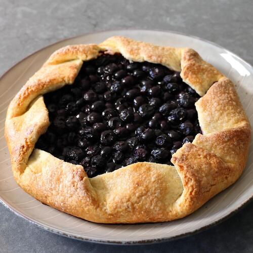

Blueberry Cornmeal Galette

Description
There are foods that just work amazingly well with each other, and the combo of blueberry and cornmeal is a great example. That goes for both the flavor and texture, as the soft, sweet nuggets of blueberry are a perfect partner for the gritty goodness of the ground corn.
Ingredients
For the Cornmeal Crust:
- 1½ cups all-purpose flour
- ½ cup cornmeal
- ½ teaspoon fine salt
- ½ cup cold unsalted butter, cubed
- 6 tablespoons ice water, or as needed
For the Blueberry Filling:
- 1 pound fresh blueberries, rinsed and dried
- ½ cup white sugar
- 1 tablespoon lemon juice
- 2 teaspoons lemon zest
- 1½ teaspoons cornstarch
For the Egg and Sugar Glaze:
- 1 large egg, beaten
- 1 teaspoon water
- 1 tablespoon demerara sugar
Directions
-
Combine flour, cornmeal, and salt in a bowl with a pastry blender. Add cold butter and combine with the pastry blender until coarse crumbs form. Drizzle in cold water, a little at a time, stirring to combine with a fork, until dough comes together.
-
Turn dough onto a work surface and bring together with your hands; press into a disk of dough.
-
Wrap dough in plastic wrap and chill in the refrigerator for about 30 minutes.
-
Preheat the oven to 400 degrees F (200 degrees C). Line a baking sheet with parchment paper or a Silpat® baking mat.
-
Combine blueberries, sugar, lemon juice, lemon zest, and cornstarch in a bowl.
-
Remove dough from the refrigerator and roll on a lightly floured work surface into a 15-inch circle, about 1/8 inch thick.
-
Place blueberry filling into the center of the dough, leaving 3 to 4 inches of space around the border of dough. Fold dough up and around the berries, rotating a few inches and make another fold, overlapping the first; repeat around the dough until pleats are formed.
-
Combine beaten egg and water in a small bowl and brush on the dough. Sprinkle on demerara sugar.
-
Bake in the center of the preheated oven until golden, about 45 minutes.
Home